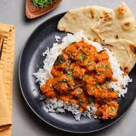

Chicken Tikka Masala
Prep and Cook Time: 30 minutes
Serves: 8

Chicken Tikka Masala is a dish consisting of roasted marinated chicken chunks in a spiced curry sauce.
The dish was popularised by cooks from India living in the UK, and is not considered tradional Indian food. However, chicken tikka masala is so popular it is one of the nations two national dishes.
Ingredients
Marinade
- 1 cup (300g) low fat Greek Yogurt
- 1/2" know of ginger, grated
- 4 cloves of garlic, grated
- 2 tsp. (8g) garam masala
- 1 tsp. (2g) turmeric powder
- 1 tsp. (3g) paprika
- 1 1/2 teaspoons (4g) ground cumin
- 2 tsp. (10g) kosher salt
- 1 tsp. (3g) ground black pepper
- 2 lbs. (900g) boneless skinless chicken breast, cut into 1 1/2" cubes
Tikka Masala
- Cooking Spray
- 1 medium yellow onion, thinly sliced
- Salt, to taste
- 4 cloves garlic, minced
- 1-inch knob of ginger, grated
- 1 tsp.(2g) ground coriander
- 1 tsp.(3g) ground cumin
- 1/2 tsp.(1g) cayenne powder
- 1/2 c.(120ml) chicken stock
- 1 15oz. can(425g) crushed tomatoes
- Water
- 1 c.(240ml) half & half
To Serve
- 6 c. steamed jasmine rice
- Cilantro leaves, to garnish